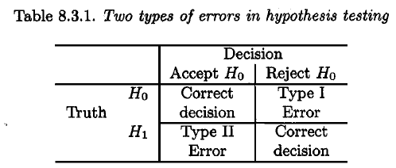
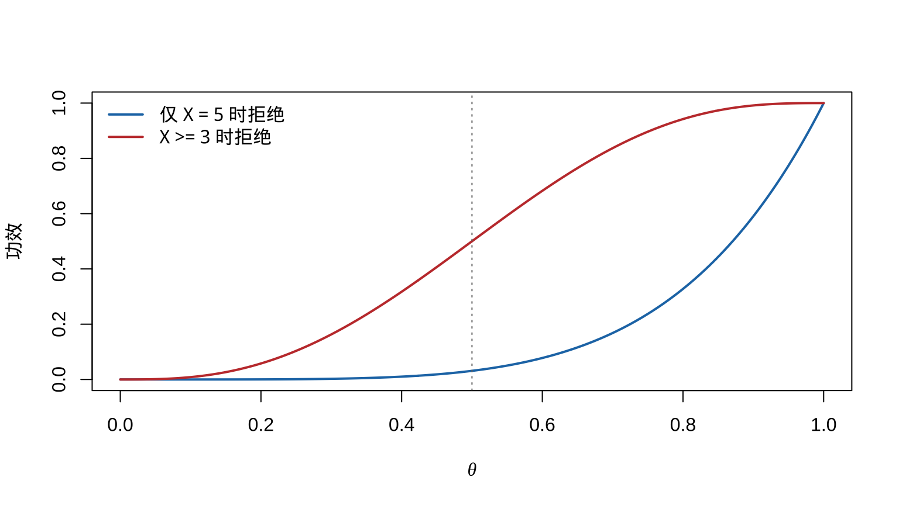
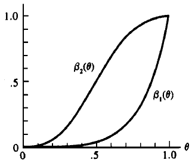
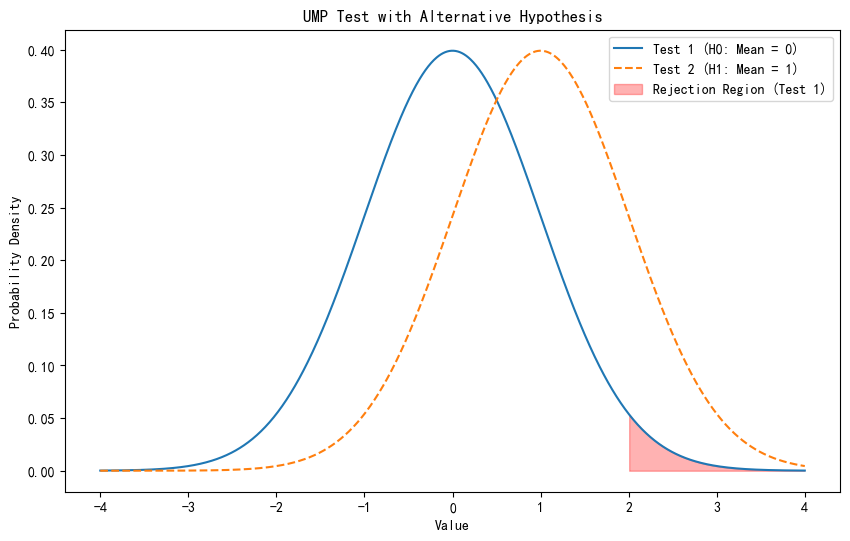
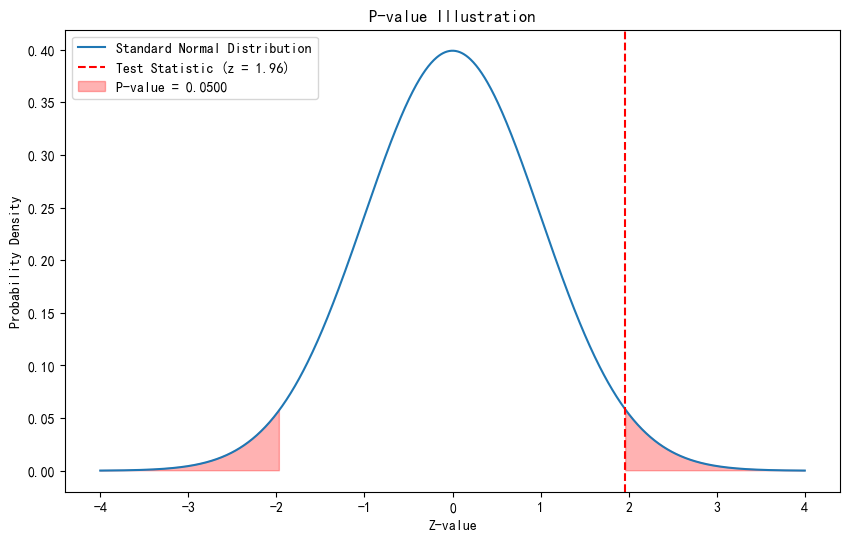
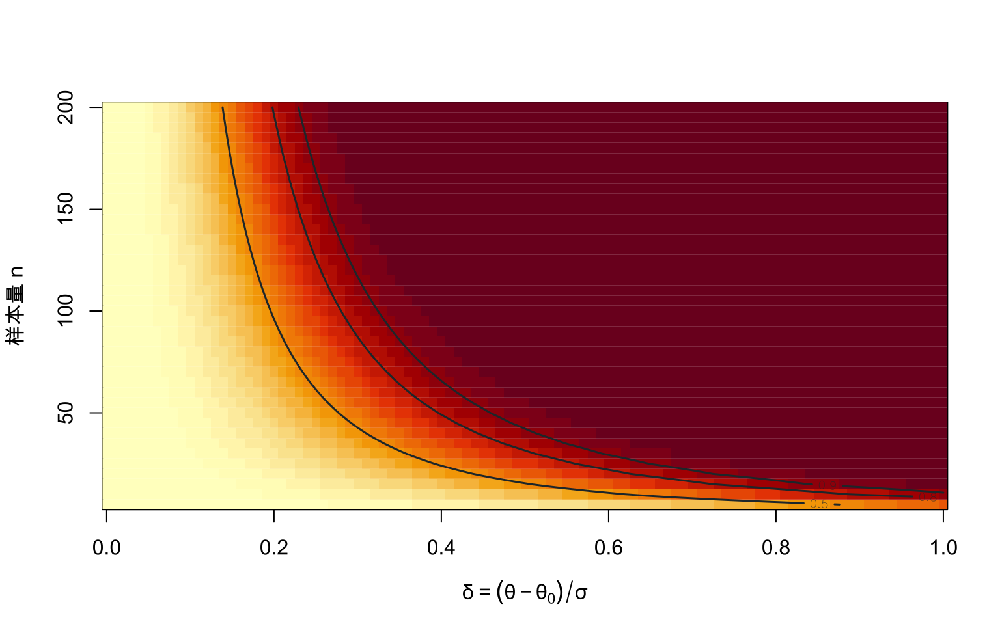
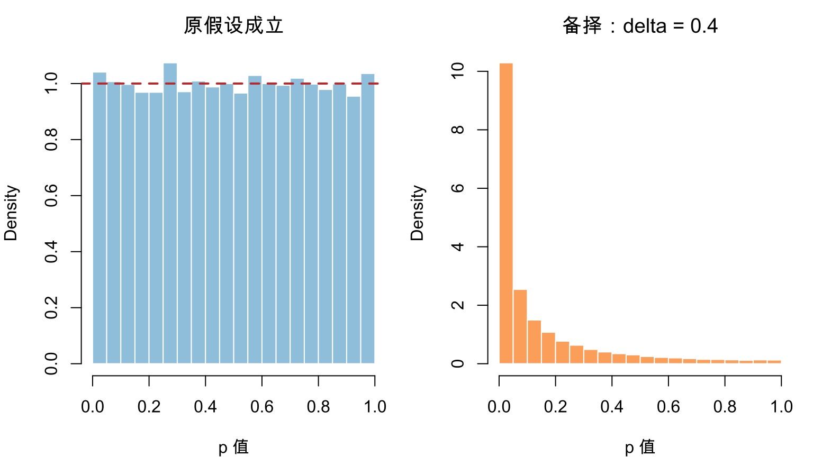

第 8 假设检验
本章对应 chap-8.tex 及三个 LaTeX 子文件，讨论假设、似然比检验、Bayes 检验、两类错误与功效函数，以及 Neyman–Pearson 引理、单调似然比、UMP 与无偏检验。原课件图形和数学推导均保留，并增加一个可执行的功效函数示例。
8.1 假设、原假设与拒绝域
定义 8.1 假设是关于总体参数的陈述。主要假设称为原假设，记为 \(H_0\)；其补集称为备择假设，记为 \(H_1\)。若 \(\Theta_0\subset\Theta\)，则
\[H_0:\theta\in\Theta_0,\qquad H_1:\theta\in\Theta_0^c.\]
检验程序把样本空间分为接受域与拒绝域 \(R\)：当 \(\mathbf x\in R\) 时拒绝 \(H_0\)，否则不拒绝 \(H_0\)。样本证据不足并不等同于原假设已经得到证明。
8.2 似然比检验
对随机样本 \(X_1,\ldots,X_n\)，似然为
\[L(\theta\mid\mathbf x)=f(\mathbf x\mid\theta)=\prod_{i=1}^nf(x_i\mid\theta).\]
定义 8.2 检验 \(H_0:\theta\in\Theta_0\) 对 \(H_1:\theta\in\Theta_0^c\) 的似然比统计量为
\[ \lambda(\mathbf x)= \frac{\sup_{\theta\in\Theta_0}L(\theta\mid\mathbf x)} {\sup_{\theta\in\Theta}L(\theta\mid\mathbf x)} =\frac{L(\hat\theta_0\mid\mathbf x)}{L(\hat\theta\mid\mathbf x)}. \]
其中 \(\hat\theta_0\) 是受限 MLE，\(\hat\theta\) 是无约束 MLE。LRT 的拒绝域形如 \(\{\mathbf x:\lambda(\mathbf x)\le c\}\)，\(0\le c\le1\)。
例 8.1 例 8.2.2（正态总体的 LRT） 若 \(X_i\overset{\mathrm{iid}}\sim N(\theta,1)\)，检验 \(H_0:\theta=\theta_0\) 对 \(H_1:\theta\ne\theta_0\)，求似然比统计量及拒绝域。
查看详细解答
原假设下的受限 MLE 为 \(\theta_0\)，无约束 MLE 为 \(\bar x\)，因此
\[ \begin{aligned} \lambda(\mathbf x) &=\exp\left\{\frac{-\sum_i(x_i-\theta_0)^2+\sum_i(x_i-\bar x)^2}{2}\right\}\\ &=\exp\{-n(\bar x-\theta_0)^2/2\}, \end{aligned} \]
其中使用了 \(\sum_i(x_i-\theta_0)^2=\sum_i(x_i-\bar x)^2+n(\bar x-\theta_0)^2\)。拒绝域等价于
\[\left\{\mathbf x:|\bar x-\theta_0|\ge\sqrt{-2\log(c)/n}\right\}.\]
定理 8.1 定理 8.2.4（LRT 与充分性） 若 \(T(\mathbf X)\) 是关于 \(\theta\) 的充分统计量，分别用 \(T\) 与完整样本构造的似然比统计量为 \(\lambda^*(t)\) 与 \(\lambda(\mathbf x)\)，则 \(\lambda^*\{T(\mathbf x)\}=\lambda(\mathbf x)\)。
展开证明
由因子分解定理，样本密度可写成 \(f(\mathbf x\mid\theta)=g\{T(\mathbf x)\mid\theta\}h(\mathbf x)\)，其中 \(h\) 不依赖 \(\theta\)，而 \(g\) 是 \(T\) 的 pmf 或 pdf。于是
\[ \begin{aligned} \lambda(\mathbf x) &=\frac{\sup_{\theta\in\Theta_0}g\{T(\mathbf x)\mid\theta\}h(\mathbf x)} {\sup_{\theta\in\Theta}g\{T(\mathbf x)\mid\theta\}h(\mathbf x)}\\ &=\frac{\sup_{\theta\in\Theta_0}g\{T(\mathbf x)\mid\theta\}} {\sup_{\theta\in\Theta}g\{T(\mathbf x)\mid\theta\}} =\lambda^*\{T(\mathbf x)\}. \end{aligned} \]
第二个等号中，无参数因子 \(h(\mathbf x)\) 在分子、分母中约去。因此完整样本和充分统计量产生同一个 LRT。
8.3 指数位置族与含干扰参数的 LRT
例 8.2 设 \(X_i\) 来自移位指数密度
\[f(x\mid\theta)=e^{-(x-\theta)}I(x\ge\theta),\qquad -\infty<\theta<\infty.\]
检验 \(H_0:\theta\le\theta_0\) 对 \(H_1:\theta>\theta_0\)。似然
\[L(\theta\mid\mathbf x)=e^{-\sum x_i+n\theta}I(\theta\le x_{(1)})\]
在可行域内随 \(\theta\) 增加，故
\[ \lambda(\mathbf x)= \begin{cases} 1,&x_{(1)}\le\theta_0,\\ e^{-n(x_{(1)}-\theta_0)},&x_{(1)}>\theta_0. \end{cases} \]
拒绝域可写为 \(\{\mathbf x:x_{(1)}\ge\theta_0-\log(c)/n\}\)。
若 \(X_i\sim N(\mu,\sigma^2)\) 且检验 \(H_0:\mu\le\mu_0\) 对 \(H_1:\mu>\mu_0\)，\(\sigma^2\) 是干扰参数。无约束 MLE 为 \(\hat\mu=\bar x\)、\(\hat\sigma^2=n^{-1}\sum_i(x_i-\bar x)^2\)；当 \(\bar x>\mu_0\) 时，受限最大值在 \(\mu_0\) 处取得，并令 \(\hat\sigma_0^2=n^{-1}\sum_i(x_i-\mu_0)^2\)。化简后，拒绝域等价于
\[\left\{\mathbf x:\bar x>\mu_0+b\sqrt{S^2/n}\right\},\]
常数 \(b\) 由检验水平决定，即得到单侧 \(t\) 检验的形式。
8.4 Bayes 检验
给定后验分布 \(\pi(\theta\mid\mathbf x)\)，可比较 \(P(\theta\in\Theta_0\mid\mathbf x)\) 与 \(P(\theta\in\Theta_0^c\mid\mathbf x)\)。在两种误判损失相同的 0–1 损失下，当后者大于 \(1/2\) 时拒绝 \(H_0\)；拒绝域为
\[\left\{\mathbf x:P(\theta\in\Theta_0^c\mid\mathbf x)>\frac12\right\}.\]
例 8.3 若 \(X_i\overset{\mathrm{iid}}\sim N(\theta,\sigma^2)\)，先验 \(\theta\sim N(\mu,\tau^2)\)，检验 \(H_0:\theta\le\theta_0\) 对 \(H_1:\theta>\theta_0\)，则后验均值与方差为
\[m_n=\frac{n\tau^2\bar x+\sigma^2\mu}{n\tau^2+\sigma^2},\qquad v_n=\frac{\sigma^2\tau^2}{n\tau^2+\sigma^2}.\]
后验分布对称，故 \(P(\theta\le\theta_0\mid\mathbf x)\ge1/2\) 等价于 \(m_n\le\theta_0\)。于是当
\[\bar X\le\theta_0+\frac{\sigma^2(\theta_0-\mu)}{n\tau^2}\]
时不拒绝 \(H_0\)，否则选择 \(H_1\)。
8.5 两类错误与功效函数

图 8.1: 原课件中的假设检验决策与两类错误示意
定义 8.3 对拒绝域 \(R\)，第一类错误概率为 \(P_\theta(\mathbf X\in R)\)（\(\theta\in\Theta_0\)），第二类错误概率为 \(P_\theta(\mathbf X\in R^c)\)（\(\theta\in\Theta_0^c\)）。检验的功效函数为
\[\beta(\theta)=P_\theta(\mathbf X\in R).\]
例 8.4 设 \(X\sim\operatorname{Bin}(5,\theta)\)，检验 \(H_0:\theta\le1/2\) 对 \(H_1:\theta>1/2\)。若仅在 \(X=5\) 时拒绝，则 \(\beta_1(\theta)=\theta^5\)；若在 \(X\in\{3,4,5\}\) 时拒绝，则
\[\beta_2(\theta)=10\theta^3(1-\theta)^2+5\theta^4(1-\theta)+\theta^5.\]
theta <- seq(0, 1, length.out = 301)
power_1 <- theta^5
power_2 <- pbinom(2, size = 5, prob = theta, lower.tail = FALSE)
matplot(theta, cbind(power_1, power_2), type = "l", lty = 1,
lwd = 2, col = c("#1F77B4", "#C43C39"),
xlab = expression(theta), ylab = "功效")
abline(v = 0.5, lty = 3, col = "grey45")
legend("topleft", c("仅 X = 5 时拒绝", "X >= 3 时拒绝"),
col = c("#1F77B4", "#C43C39"), lty = 1, lwd = 2, bty = "n")
图 8.2: 两个二项检验的功效函数

图 8.3: 原课件中的二项功效函数图
定义 8.4 若 \(\sup_{\theta\in\Theta_0}\beta(\theta)=\alpha\)，称检验具有大小 \(\alpha\)；若该上确界不超过 \(\alpha\)，称为水平 \(\alpha\) 检验。
对正态均值双侧 LRT，选择临界值使检验大小为 \(\alpha\)，得到 \(|\bar X-\theta_0|\ge z_{\alpha/2}/\sqrt n\)，相应的似然比临界值为 \(c=\exp(-z_{\alpha/2}^2/2)\)。
8.6 最强检验与 Neyman–Pearson 引理
定义 8.5 在检验类 \(\mathcal C\) 中，若某检验的功效 \(\beta(\theta)\) 对每个 \(\theta\in\Theta_0^c\) 都不小于类中任何其他检验的功效，则称其为该类中的一致最强（UMP）检验。本节的 \(\mathcal C\) 为所有水平 \(\alpha\) 检验。

图 8.4: 原课件中的 UMP 概念示意
定理 8.2 定理 8.3.12（Neyman–Pearson 引理） 对简单假设 \(H_0:\theta=\theta_0\) 与 \(H_1:\theta=\theta_1\)，若拒绝域 \(R\) 满足
\[ \mathbf x\in R\ \text{if }f(\mathbf x\mid\theta_1)>k f(\mathbf x\mid\theta_0),\qquad \mathbf x\in R^c\ \text{if }f(\mathbf x\mid\theta_1)<k f(\mathbf x\mid\theta_0), \]
且 \(P_{\theta_0}(\mathbf X\in R)=\alpha\)，则该检验是水平 \(\alpha\) 的最强检验。若存在 \(k>0\) 的此类检验，则任何水平 \(\alpha\) 最强检验除零概率集合外都必须采用同样的似然比排序，并且实际大小为 \(\alpha\)。
展开证明
先证连续情形；离散情形把积分换成求和即可。令 \(\phi\) 为上述拒绝域的检验函数，\(\phi'\) 为任意其他水平 \(\alpha\) 检验的检验函数，二者的功效分别为 \(\beta\) 与 \(\beta'\)。由似然比排序，逐点有
\[ \{\phi(\mathbf x)-\phi'(\mathbf x)\} \{f(\mathbf x\mid\theta_1)-k f(\mathbf x\mid\theta_0)\}\ge0. \]
积分得到
\[0\le \beta(\theta_1)-\beta'(\theta_1) -k\{\beta(\theta_0)-\beta'(\theta_0)\}.\]
因为 \(\beta(\theta_0)=\alpha\)，而 \(\phi'\) 是水平 \(\alpha\) 检验，所以 \(\beta(\theta_0)-\beta'(\theta_0)\ge0\)。当 \(k\ge0\) 时，上式推出 \(\beta(\theta_1)\ge\beta'(\theta_1)\)，故 \(\phi\) 最强。
再证必要性。若 \(k>0\) 且 \(\phi'\) 也是最强检验，则 \(\beta'(\theta_1)=\beta(\theta_1)\)。代回上式并利用 \(\beta'(\theta_0)\le\alpha=\beta(\theta_0)\)，可得 \(\beta'(\theta_0)=\alpha\)，所以 \(\phi'\) 的实际大小也是 \(\alpha\)。此时上述非负被积函数的积分为 0，故它除在 \(\theta_0\)、\(\theta_1\) 下概率均为 0 的集合外只能为 0；因此 \(\phi'\) 必须采用同样的似然比排序。
若 \(T\) 是充分统计量，以上条件可在 \(T\) 的分布 \(g(t\mid\theta_i)\) 上检验：当 \(g(t\mid\theta_1)>kg(t\mid\theta_0)\) 时拒绝。
例 8.5 若 \(X_i\sim N(\theta,\sigma^2)\)，\(\sigma^2\) 已知，检验 \(H_0:\theta=\theta_0\) 对 \(H_1:\theta=\theta_1\)，其中 \(\theta_1<\theta_0\)。似然比排序等价于 \(\bar x<c\)，故水平 \(\alpha\) 最强检验在
\[\bar X<\theta_0-\frac{\sigma z_\alpha}{\sqrt n}\]
时拒绝 \(H_0\)。
8.7 单调似然比与 Karlin–Rubin 定理
定义 8.6 若对每个 \(\theta_2>\theta_1\)，比值 \(g(t\mid\theta_2)/g(t\mid\theta_1)\) 在共同支撑上关于 \(t\) 单调，则称族 \(\{g(t\mid\theta):\theta\in\Theta\}\) 具有单调似然比（MLR）。正态未知均值（方差已知）、Poisson 和 Binomial 族均是典型例子。
定理 8.3 定理 8.3.17（Karlin–Rubin 定理） 检验 \(H_0:\theta\le\theta_0\) 对 \(H_1:\theta>\theta_0\)。若充分统计量 \(T\) 的分布族具有递增 MLR，则拒绝规则 \(T>t_0\) 是水平 \(\alpha\) 的 UMP 检验，其中 \(\alpha=P_{\theta_0}(T>t_0)\)。递减方向的情形相应反向。
展开证明
记该检验的功效为 \(\beta(\theta)=P_\theta(T>t_0)\)。递增 MLR 蕴含 \(T\) 关于 \(\theta\) 随机递增，故 \(\beta(\theta)\) 非递减，从而
\[\sup_{\theta\le\theta_0}\beta(\theta)=\beta(\theta_0)=\alpha.\]
因此该检验是水平 \(\alpha\) 检验。任取 \(\theta'>\theta_0\)，单调似然比保证存在阈值常数 \(k\)，使 \(T>t_0\) 时
\[\frac{g(T\mid\theta')}{g(T\mid\theta_0)}>k.\]
于是针对简单假设 \(\theta_0\) 与 \(\theta'\)，该拒绝域满足 Neyman–Pearson 排序，是水平 \(\alpha\) 的最强检验。任何复合原假设下的水平 \(\alpha\) 检验在 \(\theta_0\) 处也必有功效不超过 \(\alpha\)，故其在 \(\theta'\) 处的功效不超过当前检验。由于 \(\theta'>\theta_0\) 任意，结论对整个备择空间成立，即该检验 UMP。
因此对已知方差正态均值检验 \(H_0:\theta\ge\theta_0\) 对 \(H_1:\theta<\theta_0\)，在 \(\bar X<\theta_0-\sigma z_\alpha/\sqrt n\) 时拒绝。其功效随 \(\theta\) 递减，最大第一类错误发生在边界 \(\theta_0\)。
8.8 UMP 的不存在、无偏检验与 p 值
对双侧正态检验 \(H_0:\theta=\theta_0\) 对 \(H_1:\theta\ne\theta_0\)，左侧最强检验偏向 \(\theta<\theta_0\)，右侧最强检验偏向 \(\theta>\theta_0\)；两者在另一侧的功效排序反转，因此全体水平 \(\alpha\) 检验中不存在 UMP 检验。
限制到无偏检验可得到双侧规则
\[ \bar X<\theta_0-\frac{\sigma z_{\alpha/2}}{\sqrt n} \quad\text{或}\quad \bar X>\theta_0+\frac{\sigma z_{\alpha/2}}{\sqrt n}, \]
它是该问题的 UMP 无偏水平 \(\alpha\) 检验。
定理 8.4 定理 8.3.27（有效 p 值） 若统计量 \(W(\mathbf X)\) 越大越支持 \(H_1\)，则
\[p(\mathbf x)=\sup_{\theta\in\Theta_0}P_\theta\{W(\mathbf X)\ge W(\mathbf x)\}\]
是有效的 p 值；对每个 \(0\le u\le1\)，原假设下均有 \(P_\theta\{p(\mathbf X)\le u\}\le u\)。
展开证明
固定任意 \(\theta\in\Theta_0\)，定义
\[p_\theta(\mathbf x)=P_\theta\{W(\mathbf X)\ge W(\mathbf x)\}.\]
若令 \(F_\theta\) 为 \(-W(\mathbf X)\) 的 cdf，则 \(p_\theta(\mathbf X)=F_\theta\{-W(\mathbf X)\}\)。由概率积分变换的离散/连续统一形式，\(p_\theta(\mathbf X)\) 在随机序意义上不小于 \(U(0,1)\)，所以
\[P_\theta\{p_\theta(\mathbf X)\le u\}\le u,\qquad0\le u\le1.\]
又因为 \(p(\mathbf x)=\sup_{\vartheta\in\Theta_0}p_\vartheta(\mathbf x)\ge p_\theta(\mathbf x)\)，故
\[P_\theta\{p(\mathbf X)\le u\} \le P_\theta\{p_\theta(\mathbf X)\le u\}\le u.\]
该结论对每个 \(\theta\in\Theta_0\) 都成立，因此 \(p(\mathbf X)\) 是有效 p 值。

图 8.5: 原课件中的 p 值尾概率示意
8.9 功效、样本量与效应量实验
考虑方差 \(σ^2\) 已知的正态均值双侧 \(z\) 检验。令标准化效应量
\[δ=\frac{θ-θ_0}{σ},\]
则备择参数下 \(Z=\sqrt n(\bar X-θ_0)/σ\sim N(\sqrt nδ,1)\)。显著性水平为 \(α\) 时，功效为
\[ π(δ,n) =Φ\{-z_{1-α/2}-\sqrt nδ\} +1-Φ\{z_{1-α/2}-\sqrt nδ\}. \]
这说明功效并非检验方法的单一常数，而是由显著性水平、效应量和样本量共同决定。
alpha <- 0.05
critical <- qnorm(1 - alpha / 2)
effect_grid <- seq(0, 1, length.out = 101)
sample_grid <- seq(5, 200, by = 5)
power_surface <- outer(sample_grid, effect_grid, function(n, effect) {
mean_shift <- sqrt(n) * effect
pnorm(-critical - mean_shift) + 1 - pnorm(critical - mean_shift)
})
image(effect_grid, sample_grid, t(power_surface),
col = hcl.colors(24, "YlOrRd", rev = TRUE),
xlab = expression(delta == (theta - theta[0]) / sigma),
ylab = "样本量 n", family = course_plot_family())
contour(effect_grid, sample_grid, t(power_surface), levels = c(0.5, 0.8, 0.9),
add = TRUE, drawlabels = TRUE, lwd = 1.5, col = "#263238")
图 8.6: 双侧 z 检验的功效随标准化效应量与样本量的变化（alpha=0.05）
沿图中的 \(0.8\) 等功效线读取，可以回答“给定最小有意义效应量，需要多大样本”的设计问题。样本量很大时，即使很小的效应也可能显著，因此报告结果时还应同时给出效应量和区间估计。
8.10 p 值的抽样分布
p 值是数据的函数，所以在重复抽样中本身也是随机变量。有效 p 值在连续原假设下服从 \(U(0,1)\)；在备择成立时，好的检验会使 p 值更集中在 0 附近。
set.seed(8308)
b_pvalue <- 20000
n_pvalue <- 25
effect_pvalue <- 0.4
z_null <- rnorm(b_pvalue)
z_alt <- rnorm(b_pvalue, mean = sqrt(n_pvalue) * effect_pvalue)
p_null <- 2 * pnorm(-abs(z_null))
p_alt <- 2 * pnorm(-abs(z_alt))
old_par <- par(mfrow = c(1, 2), mar = c(4, 4, 2.5, 1),
family = course_plot_family())
hist(p_null, breaks = seq(0, 1, by = 0.05), probability = TRUE,
col = "#9ECAE1", border = "white", xlab = "p 值", main = "原假设成立")
abline(h = 1, col = "#C43C39", lwd = 2, lty = 2)
hist(p_alt, breaks = seq(0, 1, by = 0.05), probability = TRUE,
col = "#FDAE6B", border = "white", xlab = "p 值", main = "备择：delta = 0.4")
图 8.7: 双侧 z 检验在原假设与备择假设下的 p 值分布
par(old_par)“原假设下均匀”不是说观测到的 p 值可以解释成原假设为真的概率；它描述的是检验在重复抽样下的校准性质。右图向 0 集中，对应的正是较高功效。
8.11 贯穿案例：缺陷率是否超过标准
回到第 7 章的抽检数据：\(Y\sim\operatorname{Bin}(200,p)\)，观测到 \(y=16\)，检验
\[H_0:p\le0.05\qquad\text{对}\qquad H_1:p>0.05.\]
由于较大的 \(Y\) 更支持备择，边界参数 \(p_0=0.05\) 给出单侧精确 p 值
\[P_{0.05}(Y\ge16)=0.0444.\]
n_defect <- 200
y_defect <- 16
p_standard <- 0.05
knitr::kable(
data.frame(
`统计量` = c("样本缺陷率", "精确单侧 p 值"),
`数值` = c(y_defect / n_defect,
pbinom(y_defect - 1, n_defect, p_standard,
lower.tail = FALSE)),
check.names = FALSE
),
digits = 4
)| 统计量 | 数值 |
|---|---|
| 样本缺陷率 | 0.0800 |
| 精确单侧 p 值 | 0.0444 |
在 \(\alpha=0.05\) 下拒绝 \(H_0\)，数据提供了缺陷率超过标准的证据。结论不等于“\(H_0\) 为假的概率是 \(95\%\)”，也不说明超标幅度是否具有实际重要性；后者应结合第 9 章的区间估计判断。